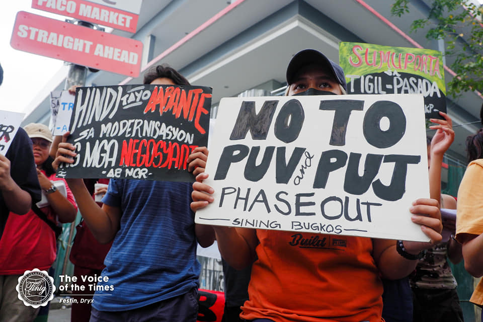
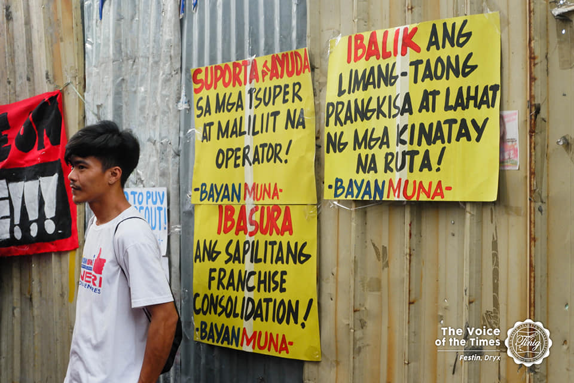

A Petition to Not Require Jeepney Drivers
in Buying or Paying for the said Modernized Jeepney
Introduction
What are we advocating?
 
They are known as “kings of the road,” colorful, open-air vehicles with loud horns and diesel engines that help millions of Filipinos on their daily commutes. The Jeepney, a unique bus in the Philippines, originated from old military jeeps post-World War II. Its bright colors and open design reflect the country's creativity and community. Jeepneys are a symbol of Filipino culture, heritage, treasure, and representing the blood and identity of every Filipino will now become a part of their memories starting at the end of the year, where colorful, iconic jeepneys may soon be off the road in the Philippines.
The government wants the jeepney to be phased out and replaced by more expensive minibuses under a government modernization program that may cost 2,180,000, which is too far from the available budget for each driver that costs 160,000. While it can be beneficial to the environment, it would possibly result in a lack of jeepneys to accommodate thousands of commuters every day; a ripple effect resulting in higher transportation costs for food and other items, eventually leading to an increase in the cost of living for millions of households; the cultural heritage and identity would be gone; a friendly fare that helps Filipinos survive would be nowhere to be seen; and not having a vehicle would mean the end of the livehood of Jeepney drivers.